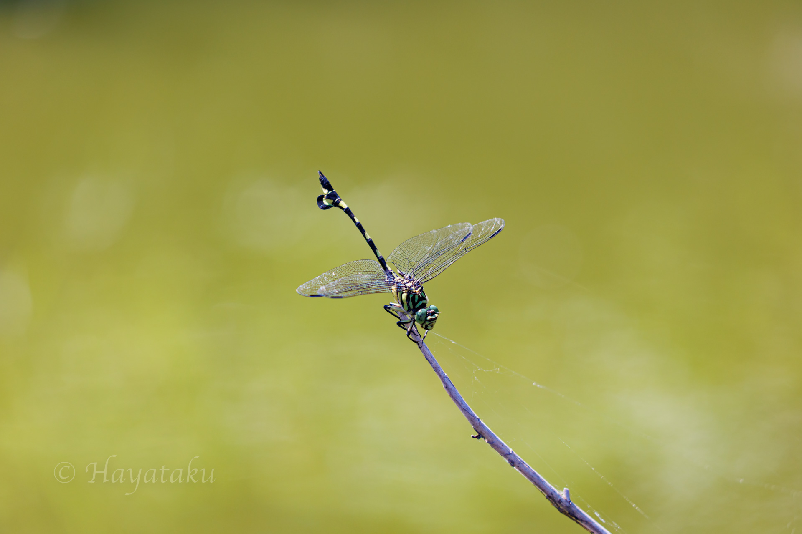

2022年7月23日 平地の池沼にて
今日はカメラのテストと撮影技術向上を目的に出かけた．昨日，Canonのミラーレスシリーズのファームウェアアップデートがあったため早速テストをしようと考えていた．今日の天気は晴れで気温は非常に高かった．池の周囲を歩いていると日陰の辺りにトンボが止まっている．その中に，ウチワヤンマが止まっていた．近付くと逃げてしまうが，待っているとまた戻ってくる．写真の一枚目は手前の草で前ボケを効果的に使うことができた．撮影後，池の周りを探索するとウチワヤンマが合計で十頭近く確認することができた．オオヤマトンボやギンヤンマもいたが数は少なかった．

2022年7月23日 ウチワヤンマ Sinictinogomphus clavatus (Fabricius, 1775) ♂
Canon EOS R6, EF70-300mm F4-5.6 IS II USM (200mm), 1/320, F5.6, ISO 200, Lightroom Classic development.

2022年7月23日 ウチワヤンマ Sinictinogomphus clavatus (Fabricius, 1775) ♂
Canon EOS R6, EF70-300mm F4-5.6 IS II USM (200mm), 1/400, F5.6, ISO 200, Lightroom Classic development.